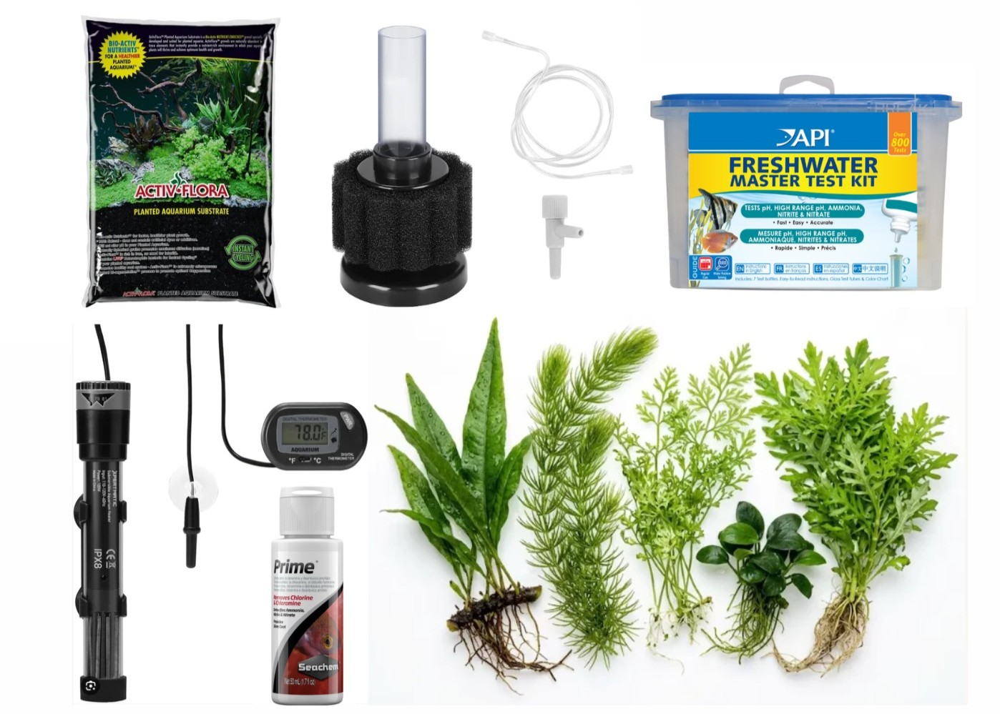
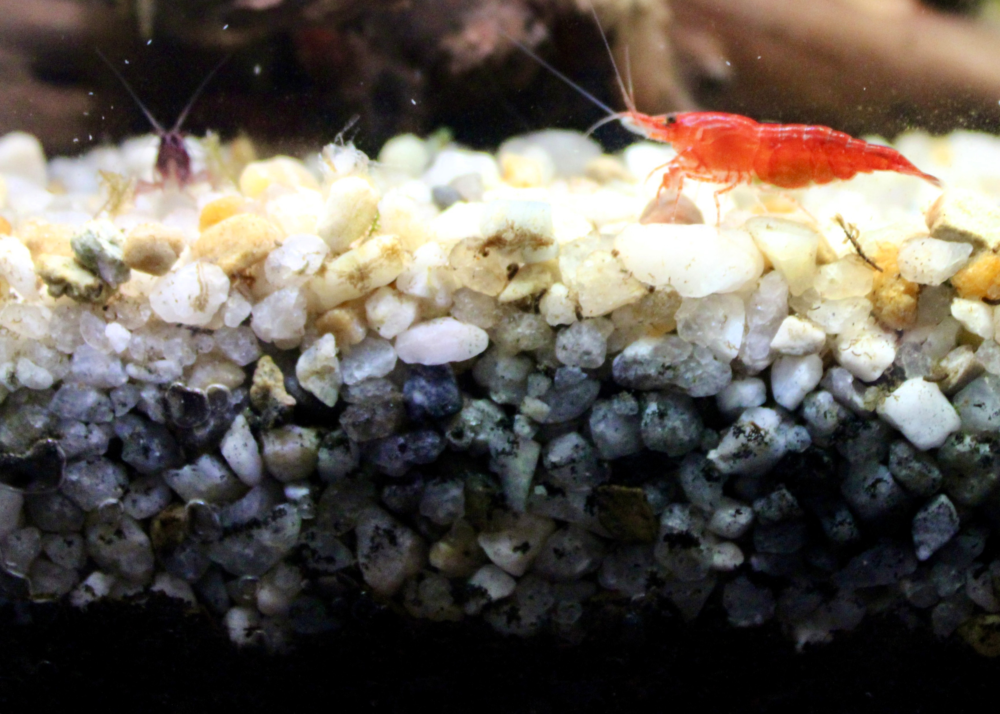
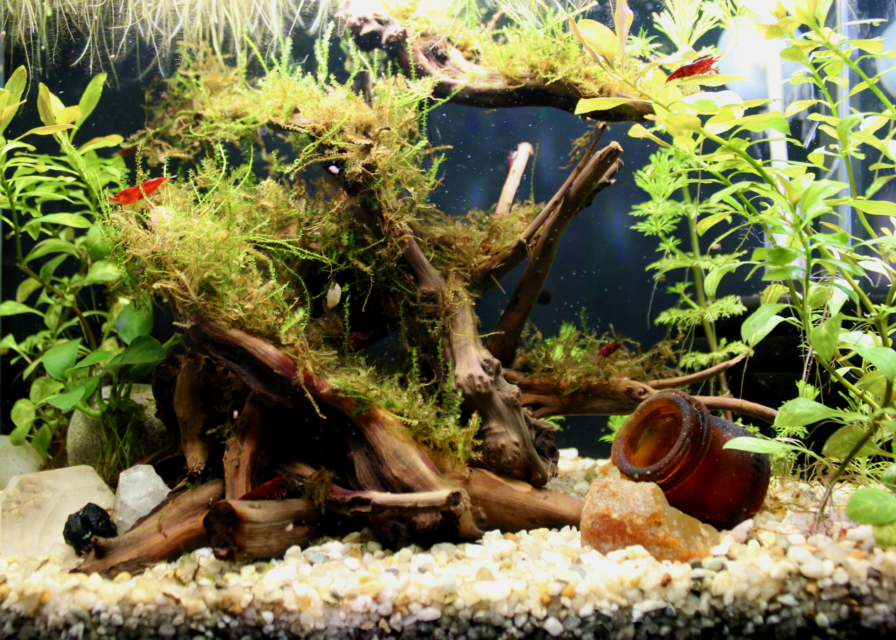

Tank Setup & Adding Shrimp
Setting up a Neocaridina tank is the most important part of the hobby. Shrimp are sensitive to unstable water, so taking the time to build a healthy tank before adding any shrimp gives your colony the best possible start. This page walks through the gear you need, how to cycle the tank, the water parameters to aim for, and how to safely add your first shrimp.
What You Need
You do not need a large or expensive setup to keep Neocaridina shrimp. A simple list of starting gear includes:
- A tank of at least 5 gallons (more water stays more stable)
- A sponge filter, which is gentle and will not suck up shrimp
- A heater, if your room gets cool
- Substrate such as inert gravel or sand
- Live plants and moss for cover and grazing surfaces
- Hardscape such as driftwood and aquarium-safe rocks
- A water test kit for the parameters listed below

Water: Don't Use Untreated Tap Water
Tap water almost always contains chlorine or chloramine, which water companies add to keep it safe to drink. These chemicals are harmful to shrimp and to the beneficial bacteria your tank depends on. Never add untreated tap water to your tank. You have two common options:
- Conditioned tap water: treat it with a water conditioner (dechlorinator) that neutralizes chlorine and chloramine. Follow the dosing on the bottle.
- Remineralized RO/DI water: many keepers start with purified water that has no minerals, then add a shrimp remineralizer to reach the GH and TDS in the table below. This gives you precise control over your parameters.
Choosing a Substrate
Substrate is the material on the bottom of your tank, and the type you choose affects both your plants and your water. There are two broad categories to know about:
- Inert substrate (such as sand or inert gravel) does not change your water chemistry. It is simple and predictable, which makes it a great choice for Neocaridina, since these shrimp do well in neutral to slightly hard water.
- Active (buffering) substrate is an aquasoil that actively lowers your pH and softens water. It is popular for Caridina shrimp, which need acidic water, but it is usually unnecessary for Neocaridina and can complicate your parameters.
For a first Neocaridina tank, an inert substrate keeps things simple. If you plan to keep live plants, a thin nutrient layer underneath or root tabs added later will help them grow.

A Note on the Walstad Method
As you read about shrimp tanks, you may come across the Walstad method, sometimes called a "dirted" tank. The idea is to place a layer of ordinary garden soil under a cap of sand or gravel, then rely on heavy planting to keep the water healthy with little filtration and few water changes. The plants and soil work together as a small natural ecosystem.
It can produce beautiful, low-maintenance tanks, but it is a more advanced approach. A dirted tank is harder to correct if something goes wrong, and the soil can release ammonia as it breaks down early on. If you are setting up your first shrimp tank, an inert substrate is more forgiving, and you can always experiment with a dirted setup once you have some experience.
Hardscape: Driftwood & Rocks
Hardscape, such as the driftwood and rocks in your tank, is more than decoration. It gives shrimp cover and surfaces to graze on, anchors plants like java fern and anubias, and helps create the kind of structured, natural environment shrimp feel secure in. A good layout also grows biofilm, which your shrimp will pick at constantly.
Common hardscape options include:
- Driftwood: a shrimp-tank favorite. It grows biofilm shrimp love (see the Feeding page)and can release tannins that gently lower pH and tint the water (harmless, and easy to reduce by pre-soaking).
- Inert rocks: stones like lava rock, slate, quartz, and dragon stone are chemically stable and safe for shrimp.
- Decorative stones and crystals: dense crystalline stones such as quartz are generally inert, but anything you are unsure about should be tested first.
The one real caution: some rocks leach minerals into the water. Stones that contain calcium carbonate, such as limestone, marble, and seiryu stone, slowly dissolve and raise your water's hardness and pH, which is usually not what you want in a stable Neocaridina tank. A quick way to check is the vinegar test: place a few drops of household vinegar on the rock, and if it fizzes, it contains carbonates and will affect your water. Also avoid rocks that are crumbly or have shiny, metallic veins, and give any new hardscape a good rinse before it goes in.
Cycling the Tank
Before any shrimp go in, your tank needs to complete the nitrogen cycle. Cycling builds a colony of beneficial bacteria that convert harmful ammonia into nitrite, and then into far less harmful nitrate. The cycle generally moves through three stages:
- Ammonia rises. An ammonia source (such as a few drops of pure ammonia or a small pinch of fish food) feeds the first bacteria. Ammonia readings climb.
- Nitrite appears. Bacteria begin converting ammonia to nitrite. You will see ammonia fall as nitrite rises.
- Nitrate appears. A second group of bacteria converts nitrite to nitrate. Once ammonia and nitrite both read zero and nitrate is present, the tank is cycled.
This process usually takes anywhere from three to six weeks. Do not rush it. Adding shrimp to an uncycled tank is one of the most common beginner mistakes, and an ammonia or nitrite spike can wipe out a colony quickly.
Testing & Water Changes
Testing is how you track the cycle's progress, so test often. Aim to test your water every two to three days during cycling so you can see ammonia, nitrite, and nitrate change over time. Liquid test kits are highly recommended and far more accurate than test strips.
You generally do not need frequent water changes while a tank is cycling, since you want the bacteria to establish. Many keepers do little or no water changing until the cycle finishes, then perform a larger water change before adding shrimp to bring nitrate down. Once shrimp are in the tank, a routine of small weekly water changes (often around 10 to 20 percent) helps keep parameters stable. Always match the temperature and parameters of new water to the tank, and add it slowly.
Water Parameters
Once your tank is cycled, test your water against the ranges below. Neocaridina are hardy and tolerate a fairly wide range, but stable water matters more than hitting one exact number. Verify these figures against your own research and your test kit's guidance.
| Parameter | Ideal Range | Notes |
|---|---|---|
| Temperature | 68–78°F (20–25°C) | Room temperature is often fine; avoid sudden swings |
| pH | 6.5–7.5 | Stability matters more than a precise value |
| GH (general hardness) | 6–8 dGH | Provides minerals shrimp need to molt |
| KH (carbonate hardness) | 2–8 dKH | Buffers pH and keeps it from crashing |
| Ammonia / Nitrite | 0 ppm | Both must read zero before adding shrimp |
| Nitrate | Below 20 ppm | Builds up over time; lowered through water changes |
Why Plants Matter

Live plants are one of the best things you can add to a shrimp tank. They give shrimp cover so they feel secure, provide surfaces for them to graze on, and help absorb waste from the water. A planted tank is generally a more stable and healthier tank. The good news for beginners is that the plants shrimp love most are low-light, low-care species that do not need pressurized CO2 or special equipment.
Beginner-friendly plants that do well in a shrimp tank without CO2 include:
- Christmas moss and other mosses — a shrimp favorite, offering tons of grazing surface and shelter for shrimplets
- Java fern — a hardy plant that attaches to wood or rock rather than being planted in substrate
- Anubias — another tough, slow-growing plant that attaches to hardscape and tolerates low light
- Marimo moss balls — easy, low-maintenance, and shrimp love picking through them
- Floating plants such as floating fern or salvinia — help shade the tank and soak up excess nutrients
Acclimating & Adding Your Shrimp
When your tank is fully cycled and your parameters are stable, it is time to add shrimp. Acclimate them slowly so they can adjust to your water. A sudden change in parameters is stressful and can be fatal. Drip acclimation, where tank water is slowly dripped into the container holding your new shrimp over an hour or two, is the safest method. Knot a piece of the airline tubing siphon and let it drip into the container, adjusting the flow to roughly 1 - 2 drops per second. You can also use a flow limiter for more precise control. Once the water volume in the container has doubled or tripled, you can gently transfer the shrimp to their new home using a net.
Start with a small group rather than a large one, and give them a quiet, planted tank to settle into. Within their first day or two you should see them exploring and grazing on surfaces — a good sign they are comfortable in their new home.